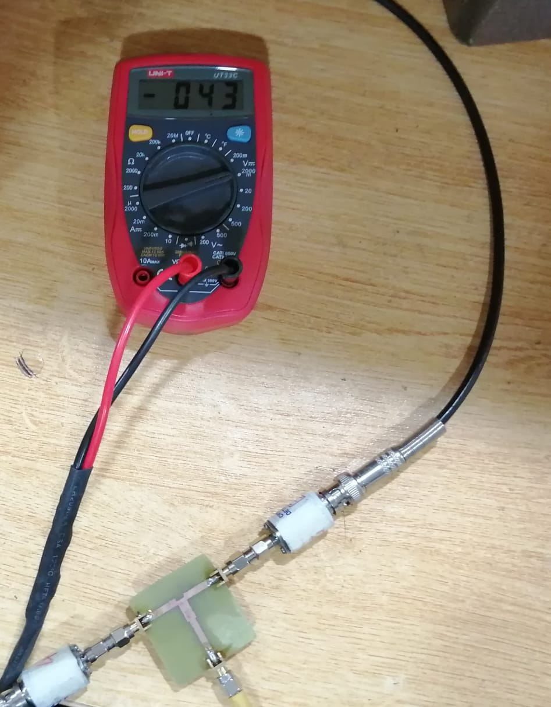

Microstrip Tee Power Divider with Quarter-Wave Transformer

This project involved the design, simulation, fabrication, and testing of a microstrip Tee power divider optimized for 5 GHz applications, using quarter-wave transformers for impedance matching. The design was created and simulated in Ansys HFSS and then fabricated on an FR4 substrate.
Theoretical Background
- Microstrip Lines: Planar transmission lines supporting quasi-TEM wave propagation.
- Effective Dielectric Constant:
ε_eff = (ε_r + 1) / 2
- Characteristic Impedance:
Z_λ/4 = √(Z_in × Z_out)
- Quarter-Wave Transformer: Used to match the 50 Ω main line to the desired output impedance (35.35 Ω) at 5 GHz.
Design & Simulation
- Substrate: FR4 (εr = 4.4, h = 1.6 mm, tanδ = 0.02)
- Operating frequency: 5 GHz
- Main line: 50 Ω microstrip
- Tee junction splitting into two quarter-wave transformers
- Simulation results: S11 = −22 dB, S21 ≈ S31 = −3.96 dB (equal split)
Fabrication
- Layout exported from HFSS and fabricated as a PCB.
- High-frequency integrity maintained during etching.
- SMA connectors soldered to all ports with proper grounding.
Testing & Measurements
After replacing faulty apparatus during initial trials, correct measurements showed nearly equal power division: ~1.5 V and ~1.4 V at respective output arms from a ~3.16 V input, confirming balanced operation.
Applications
- Beamforming networks
- Antenna array feeding
- Radar systems
- RF front ends in communication systems
- Signal routing in test equipment
Challenges
- Achieving precise impedance matching
- Maintaining symmetry in layout
- Preventing RF leakage through proper ground stitching
Conclusion
The integration of quarter-wave transformers effectively minimized return losses and achieved balanced power division. Future improvements could explore Wilkinson dividers for enhanced isolation or unequal split ratios for advanced RF applications.